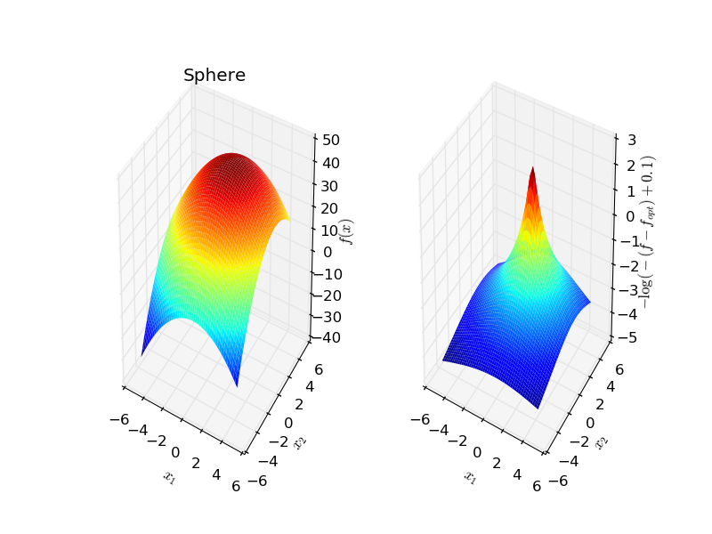

Plot an artificial objective function that can be used as a benchmark for black-box optimization.
print(__doc__)
import matplotlib.pyplot as plt
from bolero.environment import ObjectiveFunction
fig = plt.figure()
env = ObjectiveFunction(random_state=0)
env.plot(fig)
plt.show()
Total running time of the script: ( 0 minutes 0.227 seconds)